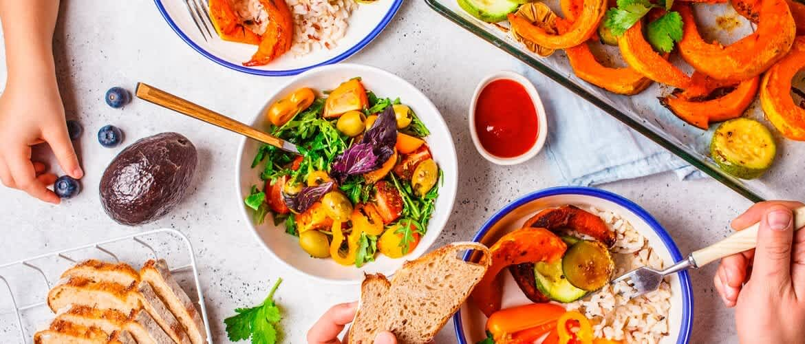
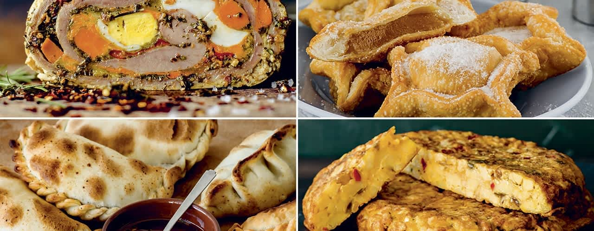
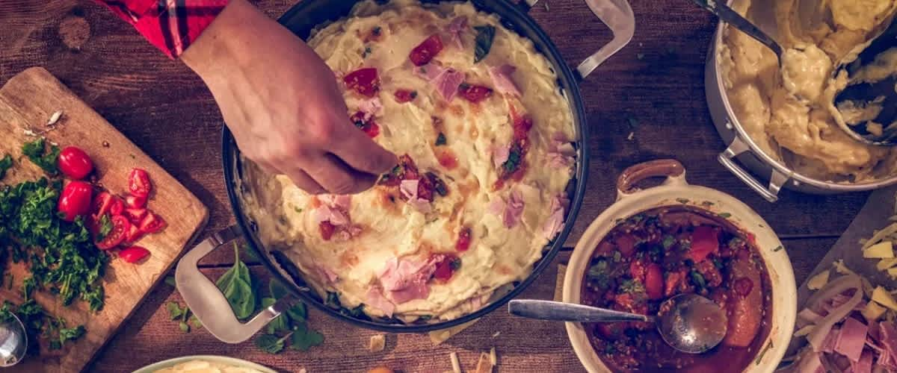
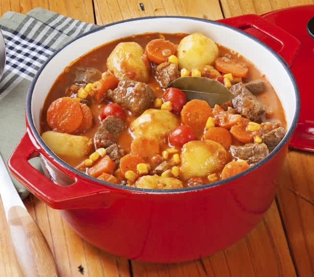
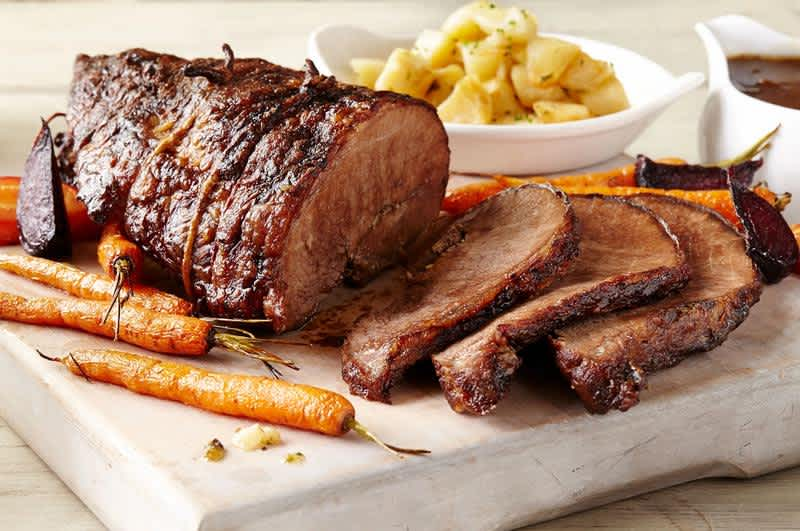
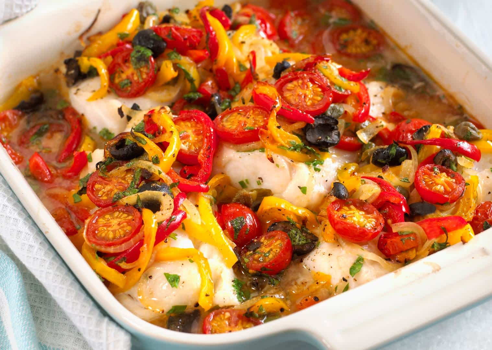
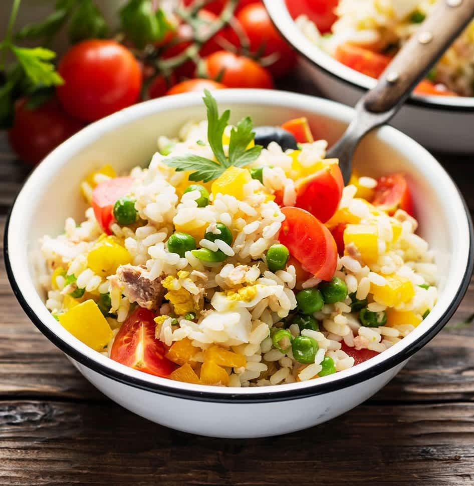
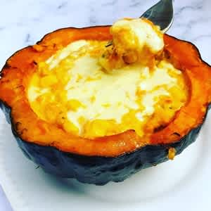
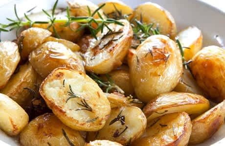

Desde Milán, Roma, Venecia y Nápoles. ¡Las mejores recetas de la Bel Paese!

Recetas Vegetarianas
Aquí encontraras las más sanas comidas veganas y vegetarianas.

De Argentina al mundo
¿Has probado las empanadas, el asado o tal vez un choripan? Prueba los mejores platillos del país campeón del mundo.

Avez-vous goûté les meilleurs plats de France?
Más allá de los crepes y el foie, Francia tiene una de las cocinas más ricas del mundo. Descubre qué platos no deberías perderte si viajas a tierras galas.
¿Pensando en qué cocinar?
Prueba estas combinaciones más populares de comidas ricas y fáciles

Recetas a la olla

Recetas con carne

Recetas al horno
Recetas con crema

Recetas con arroz
Recetas con pasta

Recetas con zapallo

Recetas con papas
¿Qué esperás para probar deliciosas comidas como esta?